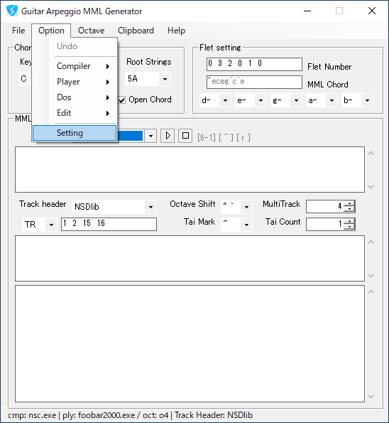
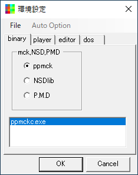
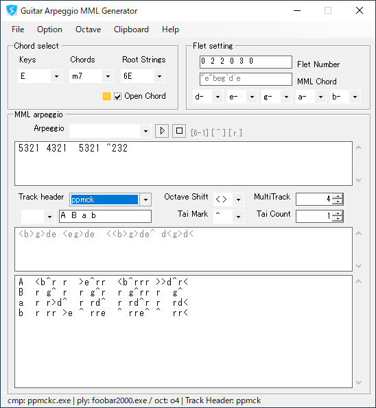

|  |
arp_gene.exeを起動します。 "Option - Setting"を選択します。 |
|  |
環境設定パネルから、 "binaryタブ"のラジオボタンからppmckを選択、 ppmckの"binフォルダ"にある、 "ppmckc.exe"を"リストボックス"へDrug&Dropで登録します。 同じく、"playerタブ"をクリック、 "nsfplay.exe"を登録します。 環境設定パネルを閉じます。 |
|  |
本体パネル、Chord selectの、"Chordsロール"を、
"m7"などに変更します。 MML arpeggioの"Arpeggioロール"から、 "5313 1313"などを、選択します。 MML arpeggioにある"Track headerロール"を、 "ppmck"へ変更します。 再生ボタンを押し、音が出れば完了です。 |
|
home>
index>
quick>
Guitar Arpeggio - MML Generator |
2021 04coreworks
|